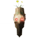
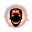
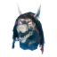
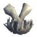
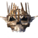

Troféus
Troféus em Valheim – 67 itens com bioma, origem, ferramenta necessária, receita e utilização.
Nenhum item encontrado.
 Kvastur
Kvastur
O melhor amigo de uma bruxa.
Como obter
- Largado por: Kvastur · Pântano
 Troféu Abominação
Troféu Abominação
Estava morto há tanto tempo que começou a viver novamente.
Como obter
- Largado por: Abominação · Pântano · 50 % de probabilidade
Utilização
- Ingrediente para: Isca de pesca fedida
 Troféu Anão Cinzento
Troféu Anão Cinzento
A cabeça de um Anão Cinzento, coberta de musgo.
Como obter
- Largado por: Anão Cinzento · Prado, Floresta negra, Norte profundo · 5 % de probabilidade
- Destruir: Aldeia do Norte · 10 % de probabilidade

Troféu Anão Cinzento BrutoForam precisos sete golpes para separar esta cabeça deformada do resto do corpo.
Como obter
- Largado por: Anão Cinzento bruto · Floresta negra · 10 % de probabilidade
- Destruir: Aldeia do Norte · 5,3 % de probabilidade
 Troféu Anão Cinzento Xamã
Troféu Anão Cinzento Xamã
Ele pode tentar voltar, por isso não te esqueças de cortar quaisquer novos rebentos...
Como obter
- Largado por: Anão Cinzento xamã · Floresta negra, Norte profundo · 10 % de probabilidade
Utilização
- Ingrediente para: Coração da floresta
 Troféu anão dvergr
Troféu anão dvergr
Francamente é um pouco preocupante que você considere pendurar isto em sua parede...
Como obter
- Largado por: Anão dvergr mago · Terras nubladas · 5 % de probabilidade
- Largado por: Anão dvergr assassino · Terras nubladas, Terras Cinzentas · 5 % de probabilidade
- Largado por: Dvergr aprisionado · Norte profundo · 5 % de probabilidade
 Troféu Betumor
Troféu Betumor
Uma gosma preta e pegajosa.
Como obter
- Largado por: Betumor · Planície · 10 % de probabilidade
Utilização
- Ingrediente para: Bomba de bolha: Betume
 Troféu Blobe
Troféu Blobe
Um monte malcheiroso de material pegajoso.
Como obter
- Largado por: Bolha Elite · Pântano · 10 % de probabilidade
- Largado por: Bolha · Pântano · 10 % de probabilidade
Utilização
- Ingrediente para: Bomba de bolha: veneno, Bomba de bolha: Veneno elite
 Troféu da rainha
Troféu da rainha
Ela já viu o bastante.
Como obter
- Largado por: A Rainha · Terras nubladas
 Troféu de alce
Troféu de alce
O poderoso soberano das florestas do norte.
Como obter
- Largado por: Alce · Norte profundo · 10 % de probabilidade
Utilização
- Ingrediente para: Carapuça do Invocador, Fura-pescoço, Invocador de espíritos, Peça fundida: Carapuça do Invocador, Peça fundida: Invocador de espíritos
- Material de construção para: Trono de galhada
 Troféu de arqueiro
Troféu de arqueiro
Estas pernas podem conter poder infinito.
Como obter
- Largado por: Arqueiro carbonizado · Terras Cinzentas · 5 % de probabilidade
 Troféu de asksvin
Troféu de asksvin
Não se deixe enganar pelo sorriso amigável, pois ele poderia facilmente arrancar o seu braço.
Como obter
- Largado por: Asksvin · Terras Cinzentas · 10 % de probabilidade
Utilização
- Material de construção para: Grinalda emplumada
 Troféu de barka
Troféu de barka
A cabeça congelada de uma árvore outrora viva.
Como obter
- Largado por: Barka · Norte profundo · 10 % de probabilidade
 Troféu de bolha de lava
Troféu de bolha de lava
Provavelmente está morta, não é?
Como obter
- Largado por: Bolha de lava · Terras Cinzentas · 10 % de probabilidade

Troféu de BrennaContinua queimando, de alguma forma.
Como obter
- Largado por: Brenna · Floresta negra
 Troféu de bruxo
Troféu de bruxo
Um brilho aconchegante parece emanar de dentro. Manuseie com cuidado.
Como obter
- Largado por: Bruxo carbonizado · Terras Cinzentas · 5 % de probabilidade
 Troféu de Buscador
Troféu de Buscador
Menos delicado do que parece. O couro das asas pega a luz do fogo como se lembrasse de um voo.
Como obter
- Largado por: Buscador · Terras nubladas · 5 % de probabilidade
Utilização
- Ingrediente para: Tornozeleira retumbante
 Troféu de Carrapato
Troféu de Carrapato
É uma peça de discutível...
Como obter
- Largado por: Carrapato · Terras nubladas · 5 % de probabilidade
 Troféu de drake
Troféu de drake
Ainda frio ao toque.
Como obter
- Largado por: Dragão · Montanha · 10 % de probabilidade
Utilização
- Ingrediente para: Bomba de bolha: Gelo, Elmo de dragão, Isca de pesca congelada
 Troféu de Draugr Elite
Troféu de Draugr Elite
O olhar morto dos olhos vermelhos brilhantes envia um arrepio pelos teus ossos.
Como obter
- Largado por: Draugr de elite · Prado, Pântano · 10 % de probabilidade
- Destruir: Aldeia do Norte · 5,3 % de probabilidade
Utilização
- Ingrediente para: Martelo de forja de ferro
 Troféu de elaking
Troféu de elaking
Olhinhos maldosos encaram você.
Como obter
- Largado por: Elaking · Prado, Floresta negra, Pântano, Montanha, Planície, Terras nubladas, Terras Cinzentas, Norte profundo, Oceano · 10 % de probabilidade
 Troféu de fader
Troféu de fader
O dragão verde, corrompido para além da redenção. Ofereça-o às pedras de sacrifício.
Como obter
- Largado por: Fader · Terras Cinzentas
 Troféu de foca
Troféu de foca
Este animal nunca machucou ninguém, mas teve um fim precoce.
Como obter
- Largado por: Foca · Norte profundo · 10 % de probabilidade
 Troféu de Fuling furioso
Troféu de Fuling furioso
A enorme cabeça grisalha é pesada como um pedregulho
Como obter
- Largado por: Fuling furioso · Planície · 5 % de probabilidade
- Destruir: Aldeia do Norte · 1,1 % de probabilidade
Utilização
- Ingrediente para: Manto da evasão

Troféu de GeirrhafaEla olha para você com um olhar de gelar os ossos.
Como obter
- Largado por: Geirrhafa · Montanha
 Troféu de Golem de Pedra
Troféu de Golem de Pedra
Esta formação rochosa cristalina proporcionaria uma decoração de chão impressionante.
Como obter
- Largado por: Golem de Pedra · Montanha · 5 % de probabilidade
Utilização
- Ingrediente para: Coração de cristal
 Troféu de guerreiro
Troféu de guerreiro
Fraturas revestem o crânio, como se tivesse sofrido muitos golpes ao longo dos anos.
Como obter
- Largado por: Guerreiro carbonizado · Terras Cinzentas · 5 % de probabilidade
Utilização
- Ingrediente para: Isca de pesca quente
- Material de construção para: Baú de rocha cinzenta
 Troféu de hexen
Troféu de hexen
Antes da morte, os olhos dela brilhavam com magia. Agora, não há mais brilho algum.
Como obter
- Largado por: Hexen · Prado, Floresta negra, Pântano, Montanha, Planície, Terras nubladas, Terras Cinzentas, Norte profundo, Oceano · 10 % de probabilidade
Utilização
- Ingrediente para: Coroa de bruxa, Peça fundida: Vingança do norte, Vingança do norte
 Troféu de krigen
Troféu de krigen
Uma vez um poderoso guerreiro, agora não resta nada além de uma casca.
Como obter
- Largado por: Krigen · Prado, Floresta negra, Pântano, Montanha, Planície, Terras nubladas, Terras Cinzentas, Norte profundo, Oceano · 10 % de probabilidade

Troféu de LebreDizem que trazem sorte. Mas não para seu dono original.
Como obter
- Largado por: Lebre · Terras nubladas · 5 % de probabilidade
 Troféu de Lox
Troféu de Lox
A cabeça de uma besta gigante, coberta com pêlo espesso.
Como obter
- Largado por: Lox · Planície · 10 % de probabilidade
Utilização
- Ingrediente para: Braceletes dos corajosos, Isca de pesca nebulosa
 Troféu de mandibulóssea
Troféu de mandibulóssea
Um crânio feito de ossos densos, oferece tanto perigo quanto proteção.
Como obter
- Largado por: Mandibulóssea · Terras Cinzentas · 33 % de probabilidade
 Troféu de massa
Troféu de massa
Restos de aventureiros desafortunados, digeridos e gelificados com o tempo.
Como obter
- Largado por: Massa amorfa · Norte profundo · 10 % de probabilidade
Utilização
- Ingrediente para: Bomba-bolha: Massa
 Troféu de morgen
Troféu de morgen
O pesadelo ambulante encontrou o seu fim.
Como obter
- Largado por: Morgen · Terras Cinzentas · 5 % de probabilidade
Utilização
- Ingrediente para: Enxofre
 Troféu de Neck
Troféu de Neck
Os olhos brilhantes de malícia e os dentes afiados desmentem a natureza aparentemente calma deste pequeno lagarto.
Como obter
- Largado por: Lagarto · Prado · 5 % de probabilidade
 Troféu de Sanguessuga
Troféu de Sanguessuga
Embora viscosa, a pele é lindamente padronizada em vermelho e preto.
Como obter
- Largado por: Sanguessuga · Pântano · 10 % de probabilidade
Utilização
- Ingrediente para: Broche de ferro
 Troféu de sem-olhos
Troféu de sem-olhos
Ser cortado por estas garras seria bastante desagradável.
Como obter
- Largado por: Sem-olhos · Norte profundo · 10 % de probabilidade
 Troféu de soldado buscador
Troféu de soldado buscador
A cabeça de um campeão caído.
Como obter
- Largado por: Soldado buscador · Terras nubladas · 5 % de probabilidade
- Destruir: Aldeia do Norte · 5,3 % de probabilidade
 Troféu de Thungr
Troféu de Thungr
Não parece muito durão agora.
Como obter
- Largado por: Zil e Thungr · Planície
 Troféu de Urso
Troféu de Urso
Esse olhar ainda é assustador...
Como obter
- Largado por: Urso · Floresta negra · 10 % de probabilidade
Utilização
- Ingrediente para: Cabeça de urso, Pingente de bronze
- Material de construção para: Tapete de pele de urso
 Troféu de uruvul
Troféu de uruvul
É como um urubu, mas que prospera em climas vulcânicos.
Como obter
- Largado por: Uruvul · Terras Cinzentas · 10 % de probabilidade
 Troféu de valquíria caída
Troféu de valquíria caída
Embora esteja morta, ela anseia em ver sangue escorrendo.
Como obter
- Largado por: Valquíria caída · Terras Cinzentas · 5 % de probabilidade
Utilização
- Ingrediente para: Jörmundling
 Troféu de Writhan
Troféu de Writhan
Por mais que esteja morto, é melhor manusear com cuidado.
Como obter
- Largado por: Writhan · Pântano · 10 % de probabilidade

Troféu de YagluthA cabeça sem coroa de um rei morto.
Como obter
- Largado por: Yagluth · Planície
 Troféu de Zomburso
Troféu de Zomburso
Esses olhos estão finalmente vazios para sempre.
Como obter
- Largado por: Zomburso · Planície · 10 % de probabilidade
Utilização
- Ingrediente para: Visagem de ossos malditos
 Troféu do Ancião
Troféu do Ancião
Esta cabeça degolada exala poder. Oferece-a aos Megálitos Sacrificiais.
Como obter
- Largado por: O Ancião · Floresta negra
 Troféu do Cultista
Troféu do Cultista
O fogo em seus olhos ainda não se apagou.
Como obter
- Largado por: Cultista · Montanha · 10 % de probabilidade
Utilização
- Ingrediente para: Capuz de Fenris
 Troféu do Eikthyr
Troféu do Eikthyr
Esta cabeça degolada exala poder. Oferece-a às Pedras Sacrificiais.
Como obter
- Largado por: Eikthyr · Prado
 Troféu do Moder
Troféu do Moder
A cabeça de um dragão, majestosa até no rigor da morte. Oferece-a às Pedras Sacrificiais.
Como obter
- Largado por: Moder · Montanha
 Troféu Draugr
Troféu Draugr
Se ele começar a sussurrar na noite, ata-lhe a boca.
Como obter
- Largado por: Draugr · Prado, Pântano · 10 % de probabilidade
 Troféu Espectro
Troféu Espectro
A pele abandonada de um espectro, um manto ondulante que é visível apenas ao luar.
Como obter
- Largado por: Espectro · Pântano · 5 % de probabilidade
 Troféu Esqueleto
Troféu Esqueleto
O sorriso sem expressão deste crânio lembra-te a inevitabilidade da morte.
Como obter
- Largado por: Esqueleto · Prado, Floresta negra, Pântano, Montanha, Planície, Norte profundo · 10 % de probabilidade
Utilização
- Ingrediente para: Escudo-torre de osso, Invocador de mortos
- Material de construção para: Velas perpétuas
 Troféu Fantasma
Troféu Fantasma
Ainda sussurra sobre assuntos inacabados?
Como obter
- Largado por: Fantasma · Floresta negra · 10 % de probabilidade
 Troféu Fenring
Troféu Fenring
Meio lobo e meio homem, seu rosto congelado em um rosnado de dor.
Como obter
- Largado por: Fenring · Montanha · 10 % de probabilidade
Utilização
- Ingrediente para: Isca de pesca fria, Visão do lobo
 Troféu Fuling
Troféu Fuling
Pregas soltas de pele esverdeada, em volta de um par de olhos negros e cheios de ódio.
Como obter
- Largado por: Fuling · Planície · 10 % de probabilidade
Utilização
- Ingrediente para: Isca de peixe picante
 Troféu Gjall
Troféu Gjall
Espero que não saia flutuando.
Como obter
- Largado por: Gjall · Terras nubladas · 30 % de probabilidade
Utilização
- Ingrediente para: Brincos pulsantes
 Troféu Javali
Troféu Javali
Esta cabeça de javali faria uma bela decoração em qualquer casa.
Como obter
- Largado por: Javali · Prado · 15 % de probabilidade
 Troféu Lobo
Troféu Lobo
Morto e frio, com o pelo coberto de sangue seco e um uivo silencioso preso na garganta.
Como obter
- Largado por: Lobo · Montanha · 10 % de probabilidade
Utilização
- Ingrediente para: Capa de pele de lobo
- Material de construção para: Ponte levadiça rústica
 Troféu Massa Óssea
Troféu Massa Óssea
Ossos e gosma viscosa, mantidos juntos por alguma força invisível. Ofereçe às Pedras do Sacrifício.
Como obter
- Largado por: Massa Óssea · Pântano
 Troféu Mortesquito
Troféu Mortesquito
Não gostas de tocar nesta coisa mesmo quando está morta.
Como obter
- Largado por: Mortesquito · Planície · 5 % de probabilidade
 Troféu Restos Mortais Rançosos
Troféu Restos Mortais Rançosos
Um crânio rançoso e podre. Não sabes bem porque o guardaste...
Como obter
- Largado por: Restos rançosos · Floresta negra · 10 % de probabilidade
 Troféu Serpente
Troféu Serpente
As escamas ficaram opacas, mas os olhos seguem brilhantes.
Como obter
- Largado por: Serpente · Oceano · 33 % de probabilidade
Utilização
- Ingrediente para: Barbatanas do destino, Isca de peixe pesada
 Troféu Surtling
Troféu Surtling
Envolto em chama pálida, ainda fumega como uma brasa.
Como obter
- Largado por: Surtling · Pântano · 5 % de probabilidade
Utilização
- Ingrediente para: Pulseira veloz
 Troféu Troll
Troféu Troll
A pele semelhante a couro com sinais desvanecidos de símbolos antigos.
Como obter
- Largado por: Troll · Floresta negra · 50 % de probabilidade
Utilização
- Ingrediente para: Isca de pesca musgosa, Trollstav
 Troféu Ulv
Troféu Ulv
Uma cauda robusta de um menino não tão bom.
Como obter
- Largado por: Ulv · Montanha · 10 % de probabilidade
 Troféu Veado
Troféu Veado
Um belo espécime, mas para entrar em Valhalla tens de matar mais do que veados.
Como obter
- Largado por: Veado · Prado, Floresta negra · 50 % de probabilidade
Utilização
- Ingrediente para: Chifre de hidromel de Odin, Quebragamos
- Invoca o boss: Eikthyr (2 ×)
 Troféu Xamã Fuling
Troféu Xamã Fuling
Nem a morte conseguiu tirar esse sorrisinho de seus lábios tortos.
Como obter
- Largado por: Xamã Fuling · Planície · 10 % de probabilidade
- Destruir: Aldeia do Norte · 5,3 % de probabilidade